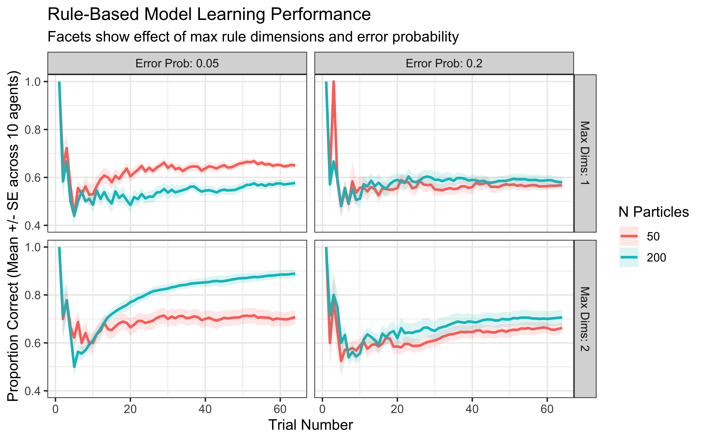
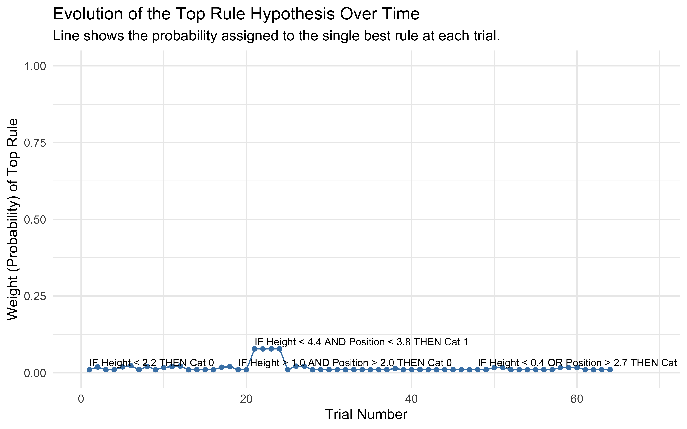
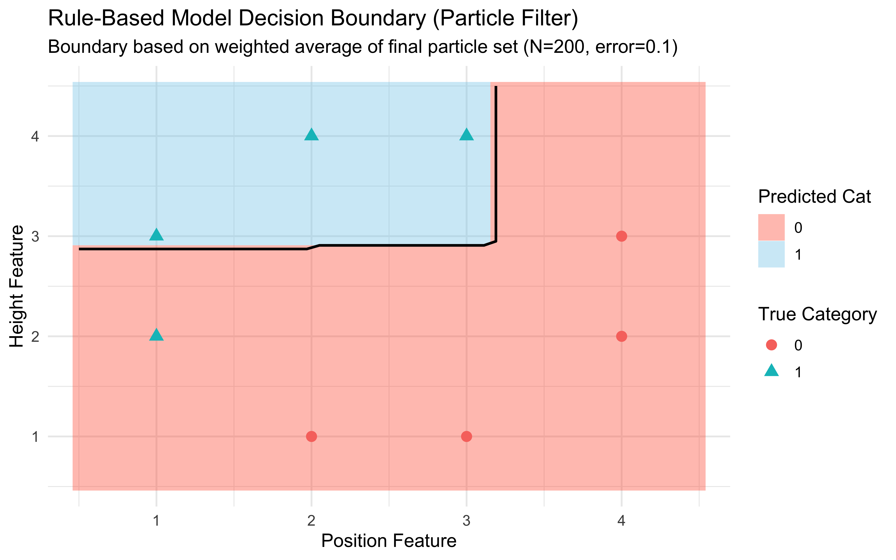

Chapter 14 Rule-Based Models of Categorization
14.1 Theoretical Foundations
In the previous chapters, we explored models based on similarity. Exemplar models compute similarity to stored instances, while prototype models compute similarity to category averages. However, humans sometimes categorize using explicit criteria or rules. Think about definitions like “a square is a shape with four equal sides and four right angles” or simple diagnostic rules like “if the animal has feathers, it’s a bird.”
Rule-based models propose that categorization often involves learning and applying such explicit rules that define category membership by partitioning the feature space.
14.1.1 Core Assumptions of Rule-Based Models
Explicit Rules: Categories are represented by rules specifying conditions for membership (e.g., “Height > 2.5 AND Position < 3.0”).
Rule Testing: Learning involves generating, testing, weighting and refining candidate rules based on feedback.
Selective Attention: Rules typically focus attention on specific, relevant features mentioned in the rule, ignoring irrelevant ones.
Deterministic Boundaries: Simple rules often create sharp, axis-aligned boundaries in the feature space.
Verbal Representation: Rules are often easily verbalizable (e.g., “If height > 2.5, then Category A”), and might actually become easier to learn and represent through verbalization.
14.1.2 Rules vs. Similarity-Based Approaches
The distinction between rule-based and similarity-based approaches lies not just in the computational details, but in fundamental assumptions about how the mind represents categories:
| Aspect | Rule-Based Models | Similarity-Based Models |
|---|---|---|
| Representation | Explicit decision criteria | Stored examples or prototypes |
| Decision Process | Rule application | Similarity computation |
| Feature Use | Selective (focus on rule-relevant features) | Holistic (all features might contribute, tho’ attention might say otherwise) |
| Category Boundaries | Sharp and often axis-aligned | Fuzzy and sensitive to overall similarity |
| Individual Differences | Different rules | Different attention weights |
| Generalization Pattern | Rectangle-like regions | Similarity-gradient regions |
14.1.3 Representing and Evaluating Rules
How can we represent a rule computationally? For our 2D stimuli (height, position), a simple rule might involve one or both dimensions and a threshold.
Example Rule: “If Height > 3.5, then predict Category 1, otherwise Category 0.”
We can represent this rule in R using a list:
# Example representation of a simple 1D rule
rule_example_1d <- list(
dimensions = 1, # Uses the 1st feature (Height)
thresholds = 3.5, # The threshold value
operations = ">", # The comparison operation
prediction_if_true = 1 # Predict Category 1 if condition is TRUE
)
# Example representation of a 2D rule (Height > 2 AND Position < 3 => Cat 0)
rule_example_2d <- list(
dimensions = c(1, 2), # Uses Height (1) and Position (2)
thresholds = c(2.0, 3.0),# Thresholds for Height, then Position
operations = c(">", "<"),# Operations for Height, then Position
logic = "AND", # How conditions are combined (AND/OR)
prediction_if_true = 0 # Predict Category 0 if combined condition is TRUE
)Now, we need a function to see if a given stimulus satisfies a rule and what category the rule predicts.
# Function to evaluate a rule for a given stimulus
# Takes a rule (represented as a list) and a stimulus (numeric vector)
# Returns the category prediction (0 or 1) made by the rule for that stimulus.
evaluate_rule <- function(rule, stimulus) {
# Handle single-dimension rules
if (length(rule$dimensions) == 1) {
dim_idx <- rule$dimensions[1]
threshold <- rule$thresholds[1]
operation <- rule$operations[1]
# Check if the stimulus meets the condition
condition_met <- switch(operation,
">" = stimulus[dim_idx] > threshold,
"<" = stimulus[dim_idx] < threshold,
stop("Invalid operation in rule") # Error handling
)
# Handle two-dimension rules (extendable to more)
} else if (length(rule$dimensions) == 2) {
# Evaluate condition for the first dimension
dim1_idx <- rule$dimensions[1]
thresh1 <- rule$thresholds[1]
op1 <- rule$operations[1]
cond1_met <- switch(op1, ">" = stimulus[dim1_idx] > thresh1, "<" = stimulus[dim1_idx] < thresh1)
# Evaluate condition for the second dimension
dim2_idx <- rule$dimensions[2]
thresh2 <- rule$thresholds[2]
op2 <- rule$operations[2]
cond2_met <- switch(op2, ">" = stimulus[dim2_idx] > thresh2, "<" = stimulus[dim2_idx] < thresh2)
# Combine conditions using the specified logic (AND/OR)
if (rule$logic == "AND") {
condition_met <- cond1_met & cond2_met
} else if (rule$logic == "OR") {
condition_met <- cond1_met | cond2_met
} else {
stop("Invalid logic in 2D rule") # Error handling
}
} else {
stop("Rule dimension count not supported (only 1 or 2)") # Error handling
}
# Return the rule's prediction based on whether the condition was met
# If condition is TRUE, return prediction_if_true.
# If condition is FALSE, return the *other* category (1 - prediction_if_true).
prediction <- ifelse(condition_met, rule$prediction_if_true, 1 - rule$prediction_if_true)
return(prediction)
}
# --- Test the function ---
# Stimulus: Height=2.5, Position=3.8
test_stimulus <- c(2.5, 3.8)
# Rule 1: Height > 3.5 => Cat 1 (Condition FALSE, predicts 0)
pred1 <- evaluate_rule(rule_example_1d, test_stimulus)
cat("Rule 1 Prediction:", pred1, "(Expected: 0)\n")## Rule 1 Prediction: 0 (Expected: 0)# Rule 2: Height > 2 AND Position < 3 => Cat 0 (Cond1 TRUE, Cond2 FALSE. AND -> FALSE. Predicts 1)
pred2 <- evaluate_rule(rule_example_2d, test_stimulus)
cat("Rule 2 Prediction:", pred2, "(Expected: 1)\n") ## Rule 2 Prediction: 1 (Expected: 1)14.2 The Challenge: Searching the Space of Rules
Evaluating a given rule is easy. The hard part of rule-based learning is finding the right rule. The number of possible rules (combinations of dimensions, thresholds, operations, logic) is vast. How can a learner efficiently search this space?
Unlike exemplar and prototype models, where the representation is straightforward, rule-based models need mechanisms for:
- Generating candidate rules
- Testing rules against observed data
- Switching between rules when necessary
- Maintaining uncertainty about which rule is correct
14.3 The Bayesian Particle Filter: Tracking Rule Hypotheses
The Bayesian particle filter provides an elegant solution to these challenges. Originally developed for tracking physical objects, particle filters have been adapted to model how humans track and update hypotheses. In our context, each “particle” represents a possible categorization rule, and the filter maintains and updates a distribution over these rules.
The core idea:
Particles = Rules: Each particle is a specific candidate rule (like the list structures above).
Weights = Belief: Each particle has a weight (\(w_{i}\)) representing the probability or belief that this specific rule is the “true” rule generating the data. Initially, all weights are equal (\(1/N\), where N is the number of particles).
Update Weights: When a new stimulus and its correct category are observed, we update the weights. Rules that correctly predict the category get their weights increased, while rules that predict incorrectly get their weights decreased. The amount of increase/decrease depends on how likely the observation was under that rule.
Resample: Over time, many particles might end up with near-zero weights (representing rules that don’t fit the data). To focus computational effort, we periodically resample the particles. We draw N new particles from the current set, with the probability of drawing each particle being proportional to its weight. This effectively eliminates low-weight rules and duplicates high-weight rules. After resampling, weights are reset to equal (\(1/N\)).
This process allows the model to maintain a distribution of belief over many rules, dynamically focusing on the most promising ones as more data arrives.
14.3.1 Step 1: Generating Initial Rule Particles
We need a way to create a diverse set of random rules to start the filter.
# Function to generate a single random rule
generate_random_rule <- function(n_features, # Total number of features available (e.g., 2)
max_dims = 2, # Max dimensions per rule (1 or 2)
feature_range = list(c(0, 5), c(0, 5)) # Assumed range for thresholds
) {
# Randomly select how many dimensions this rule uses (1 or max_dims)
num_dims_in_rule <- sample(1:max_dims, 1)
# Randomly select which specific dimensions to use
dimensions_used <- sort(sample(1:n_features, size = num_dims_in_rule, replace = FALSE))
# Generate thresholds and operations for each selected dimension
thresholds <- numeric(num_dims_in_rule)
operations <- character(num_dims_in_rule)
for (i in 1:num_dims_in_rule) {
dim_idx <- dimensions_used[i]
# Sample threshold uniformly within the feature's assumed range
thresholds[i] <- runif(1, min = feature_range[[dim_idx]][1], max = feature_range[[dim_idx]][2])
# Randomly choose '>' or '<' operation
operations[i] <- sample(c(">", "<"), 1)
}
# If it's a 2D rule, randomly choose logic (AND/OR)
rule_logic <- if (num_dims_in_rule == 2) sample(c("AND", "OR"), 1) else NA
# Randomly choose which category (0 or 1) the rule predicts if the condition is TRUE
prediction_if_true <- sample(0:1, 1)
# Return the rule as a list
list(
dimensions = dimensions_used,
thresholds = thresholds,
operations = operations,
logic = rule_logic,
prediction_if_true = prediction_if_true
)
}
# --- Initialize a set of particles ---
initialize_particles <- function(n_particles, n_features, max_dims = 2, feature_range = list(c(0, 5), c(0, 5))) {
particles <- vector("list", n_particles) # Pre-allocate list
for (i in 1:n_particles) {
particles[[i]] <- generate_random_rule(n_features, max_dims, feature_range)
}
# Assign equal initial weights
weights <- rep(1/n_particles, n_particles)
return(list(particles = particles, weights = weights))
}
# --- Example Initialization ---
n_particles_example <- 5
n_features_example <- 2
initial_system <- initialize_particles(n_particles_example, n_features_example)
cat(paste("Initialized", n_particles_example, "particles (rules). Example rule 1:\n"))## Initialized 5 particles (rules). Example rule 1:## $dimensions
## [1] 1
##
## $thresholds
## [1] 1.109728
##
## $operations
## [1] "<"
##
## $logic
## [1] NA
##
## $prediction_if_true
## [1] 1## Initial weights: 0.2 0.2 0.2 0.2 0.214.3.2 Step 2: Updating Particle Weights
When we observe a stimulus \(x\) and its true category \(y\), we update the weight \(w_{i}\) for each particle (rule i). The update is based on the likelihood of observing y given x under rule i, \(P(y∣x ,rule_{i})\).
Since rules are often assumed deterministic, we can introduce a small error_prob (ϵ) to allow for occasional noise or misapplication.
If rule i correctly predicts y (i.e., evaluate_rule(rule_i, x) == y), then \(P(y∣x ,rule_{i})=1−ϵ\).
If rule i incorrectly predicts y, then \(P(y∣x ,rule_{i})=ϵ\).
The updated weight \(w_{i}'\) is proportional to the old weight times this likelihood: \(\omega_i' \propto \omega_i \times P(y \mid x, \text{rule}_i)\).
After calculating these new unnormalized weights, we normalize them so they sum to 1 again.
# Function to update particle weights based on one observation (stimulus + true category)
update_weights <- function(particles, # List of current rule particles
weights, # Vector of current weights
stimulus, # Observed stimulus features
true_category, # True category label (0 or 1)
error_prob = 0.05 # Probability of error/noise
) {
n_particles <- length(particles)
new_unnormalized_weights <- numeric(n_particles)
for (i in 1:n_particles) {
# Get the prediction made by this particle's rule
rule_prediction <- evaluate_rule(particles[[i]], stimulus)
# Calculate the likelihood P(true_category | stimulus, rule_i)
if (rule_prediction == true_category) {
likelihood <- 1 - error_prob
} else {
likelihood <- error_prob
}
# Update weight: new_weight proportional to old_weight * likelihood
new_unnormalized_weights[i] <- weights[i] * likelihood
}
# Normalize the weights to sum to 1
total_weight <- sum(new_unnormalized_weights)
if (total_weight > 1e-9) { # Avoid division by zero if all weights become tiny
normalized_weights <- new_unnormalized_weights / total_weight
} else {
# If all weights are effectively zero, reset to uniform
# (could indicate a problem or very surprising data)
normalized_weights <- rep(1/n_particles, n_particles)
# warning("All particle weights near zero; resetting to uniform.", call. = FALSE)
}
return(normalized_weights)
}
# --- Example Update ---
cat("\n--- Example Weight Update ---\n")##
## --- Example Weight Update ---# Use the initial system from before
current_particles <- initial_system$particles
current_weights <- initial_system$weights
# Observe stimulus: Height=4, Position=3 (True Category = 1)
observed_stimulus <- c(4, 3)
observed_category <- 1
cat("Weights BEFORE update:", round(current_weights, 3), "\n")## Weights BEFORE update: 0.2 0.2 0.2 0.2 0.2# Update weights based on this observation
updated_weights <- update_weights(current_particles, current_weights,
observed_stimulus, observed_category, error_prob = 0.1)
cat("Weights AFTER update:", round(updated_weights, 3), "\n")## Weights AFTER update: 0.077 0.077 0.077 0.692 0.077# Check which rules predicted correctly (prediction == 1)
predictions <- sapply(current_particles, evaluate_rule, stimulus = observed_stimulus)
cat("Rule predictions for stimulus [4, 3]:", predictions, "\n")## Rule predictions for stimulus [4, 3]: 0 0 0 1 0## (Weights increase for rules predicting 1, decrease for rules predicting 0)14.3.3 Step 3: Resampling Particles
If we only update weights, eventually most weights become tiny, and only a few particles dominate. This is inefficient (“particle degeneracy”). Resampling revitalizes the particle set.
We draw N new particles from the current set, where the probability of selecting particle i is equal to its current weight \(w_{i}\). High-weight particles are likely to be selected multiple times, while low-weight particles are likely to be dropped. After resampling, all N particles in the new set are assigned equal weights (1/N).
# Function to resample particles based on their weights
resample_particles <- function(particles, # List of current particles
weights # Vector of current weights
) {
n_particles <- length(particles)
# Generate indices by sampling 1:n_particles with probabilities given by weights
# Using sample.int is efficient
resampled_indices <- sample.int(n = n_particles,
size = n_particles,
replace = TRUE,
prob = weights)
# Create the new set of particles based on the resampled indices
new_particles <- particles[resampled_indices]
# Reset weights to be uniform after resampling
new_weights <- rep(1/n_particles, n_particles)
return(list(particles = new_particles, weights = new_weights))
}
# --- Example Resampling ---
# Let's assume weights became skewed after several updates
cat("\n--- Example Resampling ---\n")##
## --- Example Resampling ---skewed_weights <- c(0.01, 0.6, 0.02, 0.35, 0.02)
cat("Weights BEFORE resampling:", skewed_weights, "\n")## Weights BEFORE resampling: 0.01 0.6 0.02 0.35 0.02# Perform resampling
resampled_system <- resample_particles(current_particles, skewed_weights)
cat("Weights AFTER resampling:", resampled_system$weights, "\n")## Weights AFTER resampling: 0.2 0.2 0.2 0.2 0.2# Note: The specific particles duplicated/dropped depend on the random sample
# You can inspect resampled_system$particles to see which rules survived.
# Example: table(sapply(resampled_system$particles, function(p) paste(p$dimensions, collapse=",")))When to resample? A common heuristic is to resample when the “Effective Sample Size” (ESS) drops below a threshold (e.g., N/2). ESS can be estimated as \(1 / \sum w_i^2\). Low ESS indicates high degeneracy. [I know talking about ESS within a model, when we discussed it in the context of the sampler is confusing. This is because the particle filter is a sampling method too. The ESS here is a measure of how many particles are effectively contributing to the model, given their weights. In the context of the sampler, we were discussing ESS in terms of how many samples are effectively independent. The two concepts are related but distinct.]
Step 4: Making Predictions How does the particle filter make a categorization decision for a new stimulus \(\vec{x}\)? It takes a weighted average of the predictions made by all individual particles (rules):
\[ P(\text{Choose Cat 1} \mid \vec{x}) = \sum_{i=1}^{N} w_i \times P(\text{Cat 1} \mid \vec{x}, \text{rule}_i) \]
where \(P(\text{Cat 1} \mid \vec{x}, \text{rule}_i)\) is 1 if rule i predicts category 1 for stimulus x, and 0 otherwise. (We can incorporate the error_prob here too if desired, but often the simple weighted vote is used for the final choice probability).
14.3.4 Putting it Together: The Particle Filter Agent
Now we combine these steps into a function that simulates the entire learning process over multiple trials.
# Rule-based model agent using a Bayesian Particle Filter
rule_particle_filter <- function(n_particles, # Number of rule hypotheses (particles)
error_prob, # Assumed error/noise probability
obs, # Matrix of observations (trials x features)
cat_one, # Vector of true category labels for feedback
max_dims = 2, # Max dimensions per rule (1 or 2)
resample_threshold_factor = 0.5, # Resample if ESS < N * factor
quiet = TRUE # Suppress trial progress messages
) {
n_trials <- nrow(obs)
n_features <- ncol(obs)
# --- Initialization ---
# Assume feature ranges based on typical experiment data (adjust if needed)
feature_range <- list(c(0, 5), c(0, 5))
particle_system <- initialize_particles(n_particles, n_features, max_dims, feature_range)
particles <- particle_system$particles
weights <- particle_system$weights
# Storage for response probabilities (prob of choosing category 1)
response_probs <- numeric(n_trials)
# --- Trial Loop ---
for (i in 1:n_trials) {
if (!quiet && i %% 10 == 0) print(paste("Trial", i))
current_stimulus <- as.numeric(obs[i, ])
# --- Make Prediction for current stimulus ---
# Get prediction from each particle (0 or 1)
rule_predictions <- sapply(particles, evaluate_rule, stimulus = current_stimulus)
# Calculate overall probability of choosing category 1 (weighted vote)
# P(Cat 1) = Sum(weight_i * I(prediction_i == 1))
# Incorporate error_prob for smoother probability:
# P(Cat 1 | rule_i) = (1-error_prob) if pred_i=1 else error_prob
prob_cat1_given_rules <- ifelse(rule_predictions == 1, 1 - error_prob, error_prob)
response_probs[i] <- sum(weights * prob_cat1_given_rules)
# Ensure probability is within bounds for rbinom
response_probs[i] <- max(min(response_probs[i], 0.9999), 0.0001)
# --- Learning Update (based on true feedback) ---
true_category <- cat_one[i]
weights <- update_weights(particles, weights, current_stimulus, true_category, error_prob)
# --- Resampling Step ---
# Calculate Effective Sample Size (ESS)
ess <- 1 / sum(weights^2)
# Resample if ESS is below the threshold (e.g., N/2)
if (ess < n_particles * resample_threshold_factor) {
if (!quiet) cat(" Resampling at trial", i, "ESS =", round(ess, 1), "\n")
resampled_system <- resample_particles(particles, weights)
particles <- resampled_system$particles
weights <- resampled_system$weights
}
} # End trial loop
# Return simulated binary responses based on calculated probabilities
return(rbinom(n_trials, 1, response_probs))
}
cat("Rule particle filter agent function defined.\n")## Rule particle filter agent function defined.This implementation captures the core cognitive processes hypothesized by rule-based models involving hypothesis generation, testing against evidence, belief updating, and adapting the set of considered hypotheses.
14.4 Simulating Categorization Behavior
Let’s simulate how this rule-based model performs on our standard categorization task (experiment data). We’ll vary parameters like the number of particles and the assumed error probability.
# Function to wrap simulation runs for the rule-based model
simulate_rule_responses <- function(agent, n_particles, max_dims, error_prob, experiment_data) {
observations <- as.matrix(experiment_data %>% dplyr::select(height, position))
category_feedback <- experiment_data$category
# Simulate responses using the rule_particle_filter function
sim_responses <- rule_particle_filter(
n_particles = n_particles,
error_prob = error_prob,
obs = observations,
cat_one = category_feedback,
max_dims = max_dims, # Allow 1D or 2D rules
resample_threshold_factor = 0.5,
quiet = TRUE
)
# Record results
tmp_simulated_responses <- experiment_data %>%
mutate(
trial = 1:n(),
sim_response = sim_responses,
correct = ifelse(category == sim_response, 1, 0),
performance = cumsum(correct) / trial,
n_particles = n_particles,
max_dims = max_dims,
error_prob = error_prob,
agent = agent
)
return(tmp_simulated_responses)
}
# --- Run Rule-Based Simulations ---
# Define parameters for simulation grid
param_df_rules <- dplyr::tibble(
expand_grid(
agent = 1:10, # Simulate 10 agents per condition
n_particles = c(50, 200), # Fewer vs. More rule hypotheses
max_dims = c(1, 2), # Allow only 1D rules vs. 1D & 2D rules
error_prob = c(0.05, 0.2) # Low vs. High assumed noise/error
)
)
# Define file path for saving/loading results
rule_sim_file <- file.path("simdata", "W13_rule_simulated_responses.csv")
# Run simulations (or load pre-computed results)
if (regenerate_simulations || !file.exists(rule_sim_file)) {
cat("Regenerating rule-based simulations...\n")
plan(multisession, workers = availableCores()) # Ensure parallel plan
rule_responses <- future_pmap_dfr(param_df_rules,
simulate_rule_responses,
experiment_data = experiment,
.options = furrr_options(seed = TRUE)
)
write_csv(rule_responses, rule_sim_file)
cat("Rule-based simulations saved to:", rule_sim_file, "\n")
} else {
cat("Loading existing rule-based simulations from:", rule_sim_file, "\n")
rule_responses <- read_csv(rule_sim_file, col_types = cols(
stimulus = col_double(), height = col_double(), position = col_double(),
category = col_double(), trial = col_integer(), sim_response = col_double(),
correct = col_double(), performance = col_double(), n_particles = col_integer(),
max_dims = col_integer(), error_prob = col_double(), agent = col_integer()
))
cat("Rule-based simulations loaded.\n")
}## Loading existing rule-based simulations from: simdata/W13_rule_simulated_responses.csv
## Rule-based simulations loaded.# --- Visualize Rule-Based Learning Curves ---
ggplot(rule_responses,
aes(x = trial, y = performance, color = factor(n_particles))) +
stat_summary(fun = mean, geom = "line", linewidth = 1) +
stat_summary(fun.data = mean_se, geom = "ribbon", alpha = 0.15, aes(fill = factor(n_particles)), linetype = 0) +
facet_grid(max_dims ~ error_prob,
labeller = labeller(
max_dims = function(x) paste("Max Dims:", x),
error_prob = function(x) paste("Error Prob:", x)
)) +
theme_bw(base_size = 12) +
labs(
title = "Rule-Based Model Learning Performance",
subtitle = "Facets show effect of max rule dimensions and error probability",
x = "Trial Number",
y = "Proportion Correct (Mean +/- SE across 10 agents)",
color = "N Particles",
fill = "N Particles"
) +
ylim(0.4, 1.0)
Simulation Interpretation: This visualization shows how the model’s performance is affected by:
Number of Particles: More particles generally allow for a better exploration of the rule space, potentially leading to faster learning or higher final accuracy, though gains may diminish.
Maximum Rule Dimensions: Allowing 2D rules (max_dims = 2) might be necessary if the true category boundary requires integrating information across dimensions. If a simple 1D rule suffices, allowing 2D rules might slightly slow down learning initially.
Error Probability: A higher error_prob makes the model more tolerant of rules that aren’t perfect predictors, which can be helpful if the data is noisy or categories overlap, but might prevent convergence on a precise rule if one exists.
14.4.1 Visualizing Rule Learning Over Time
A key feature of rule-based models is the explicit nature of the hypotheses. We can track which rules the particle filter believes are most likely at different points during learning.
# Function to track the top K rules and their weights during learning
track_rule_learning <- function(n_particles, error_prob, obs, cat_one,
max_dims = 2, top_k = 1,
resample_threshold_factor = 0.5) {
# Initialize
n_trials <- nrow(obs)
n_features <- ncol(obs)
feature_range <- list(c(0, 5), c(0, 5)) # Assumed range
particle_system <- initialize_particles(n_particles, n_features, max_dims, feature_range)
particles <- particle_system$particles
weights <- particle_system$weights
# Store top rules at each step
rule_trajectory_list <- list()
# Helper function to format a rule for storage/display
format_rule_info <- function(rule) {
list(
dimension1 = if(length(rule$dimensions) >= 1) rule$dimensions[1] else NA,
operation1 = if(length(rule$operations) >= 1) rule$operations[1] else NA,
threshold1 = if(length(rule$thresholds) >= 1) rule$thresholds[1] else NA,
dimension2 = if(length(rule$dimensions) >= 2) rule$dimensions[2] else NA,
operation2 = if(length(rule$operations) >= 2) rule$operations[2] else NA,
threshold2 = if(length(rule$thresholds) >= 2) rule$thresholds[2] else NA,
logic = if(is.na(rule$logic)) "N/A" else rule$logic,
prediction = rule$prediction_if_true
)
}
# Process each trial
for (i in 1:n_trials) {
current_stimulus <- as.numeric(obs[i, ])
# Record top K rules *before* update for this trial
ordered_idx <- order(weights, decreasing = TRUE)[1:min(top_k, n_particles)]
top_rules_info <- map_dfr(ordered_idx, ~tibble(
rank = which(ordered_idx == .x),
weight = weights[.x],
!!!format_rule_info(particles[[.x]]) # Splice the list columns
))
rule_trajectory_list[[i]] <- top_rules_info %>% mutate(trial = i)
# --- Learning Update ---
true_category <- cat_one[i]
weights <- update_weights(particles, weights, current_stimulus, true_category, error_prob)
# --- Resampling Step ---
ess <- 1 / sum(weights^2)
if (ess < n_particles * resample_threshold_factor) {
resampled_system <- resample_particles(particles, weights)
particles <- resampled_system$particles
weights <- resampled_system$weights
}
} # End trial loop
return(bind_rows(rule_trajectory_list))
}
# --- Run Rule Tracking ---
# Track rule learning for visualization (use fewer particles for faster tracking)
rule_tracking_data <- track_rule_learning(
n_particles = 100, # Fewer particles OK for visualization
error_prob = 0.1,
obs = as.matrix(experiment[, c("height", "position")]),
cat_one = experiment$category,
max_dims = 2, # Allow 2D rules
top_k = 1 # Track only the single best rule at each step
)
# --- Visualize Top Rule Evolution ---
# Create a function to convert tracked rule info to human-readable text
rule_to_text <- function(rule_row) {
# Map dimension indices to names (adjust if features change)
dim_names <- c("Height", "Position")
# Format 1D rules
if (is.na(rule_row$dimension2)) {
dim_name <- dim_names[rule_row$dimension1]
rule_text <- sprintf("IF %s %s %.1f THEN Cat %d",
dim_name, rule_row$operation1, rule_row$threshold1,
rule_row$prediction)
} else { # Format 2D rules
dim1_name <- dim_names[rule_row$dimension1]
dim2_name <- dim_names[rule_row$dimension2]
rule_text <- sprintf("IF %s %s %.1f %s %s %s %.1f THEN Cat %d",
dim1_name, rule_row$operation1, rule_row$threshold1,
rule_row$logic,
dim2_name, rule_row$operation2, rule_row$threshold2,
rule_row$prediction)
}
return(rule_text)
}
# Add rule text to our tracking data
rule_tracking_plot_data <- rule_tracking_data %>%
filter(rank == 1) %>% # Focus on the top-ranked rule
rowwise() %>%
mutate(rule_text = rule_to_text(cur_data())) %>%
ungroup() %>%
# Identify blocks where the same rule is dominant
mutate(rule_block = consecutive_id(rule_text))
# Create plot showing the weight of the top rule over time
ggplot(rule_tracking_plot_data, aes(x = trial, y = weight)) +
geom_line(aes(group = 1), color = "steelblue") + # Line showing weight trajectory
geom_point(color = "steelblue", size = 1.5) +
# Add text label for the rule, placed strategically
geom_text(data = . %>% distinct(rule_block, .keep_all = TRUE), # Label only once per block
aes(label = rule_text),
hjust = 0, vjust = -0.5, size = 3, check_overlap = TRUE) +
scale_y_continuous(limits = c(0, 1), name = "Weight (Probability) of Top Rule") +
scale_x_continuous(limits = c(0, nrow(experiment) + 5)) + # Add space for labels
labs(
title = "Evolution of the Top Rule Hypothesis Over Time",
subtitle = "Line shows the probability assigned to the single best rule at each trial.",
x = "Trial Number"
) +
theme_minimal(base_size = 12)
Rule Evolution Interpretation: This plot shows how the model’s belief (weight) in its single best rule hypothesis changes over trials. We can see periods where one rule dominates (high weight) and transitions where the model might be uncertain or switching between competing rules. The text labels identify the specific rule currently considered most likely.
14.4.2 Visualizing the Decision Boundary
Rule-based models typically create axis-aligned, rectangular decision boundaries. Let’s visualize the boundary created by the final, most probable rule found by the particle filter.
# Function to get predictions across a grid for the *final* state of the particle filter
# (This requires running the filter and extracting the final particle set)
get_final_rule_predictions <- function(n_particles, error_prob, obs_train, cat_one_train,
grid_points, max_dims = 2) {
n_trials_train <- nrow(obs_train)
n_features_train <- ncol(obs_train)
feature_range <- list(c(0, 5), c(0, 5))
# Run the particle filter to get the final state
# Initialize
particle_system <- initialize_particles(n_particles, n_features_train, max_dims, feature_range)
particles <- particle_system$particles
weights <- particle_system$weights
# Train the filter
for (i in 1:n_trials_train) {
current_stimulus <- as.numeric(obs_train[i, ])
true_category <- cat_one_train[i]
weights <- update_weights(particles, weights, current_stimulus, true_category, error_prob)
ess <- 1 / sum(weights^2)
if (ess < n_particles * 0.5) {
resampled_system <- resample_particles(particles, weights)
particles <- resampled_system$particles
weights <- resampled_system$weights
}
}
# Now, use the final particles and weights to predict on the grid
grid_predictions <- apply(as.matrix(grid_points), 1, function(point) {
rule_preds <- sapply(particles, evaluate_rule, stimulus = point)
# Calculate weighted probability of predicting category 1
prob_cat1_given_rules <- ifelse(rule_preds == 1, 1 - error_prob, error_prob)
prob_cat1 <- sum(weights * prob_cat1_given_rules)
return(prob_cat1)
})
return(grid_predictions)
}
# Create a grid of points in the stimulus space
grid_points <- expand.grid(
# Use feature names consistent with 'experiment' data
height = seq(min(stimuli$height) - 0.5, max(stimuli$height) + 0.5, length.out = 50),
position = seq(min(stimuli$position) - 0.5, max(stimuli$position) + 0.5, length.out = 50)
)
# Get predictions across the grid using the final state of a trained filter
rule_grid_preds <- get_final_rule_predictions(
n_particles = 200, # Use a reasonable number of particles
error_prob = 0.1,
obs_train = as.matrix(experiment[, c("height", "position")]),
cat_one_train = experiment$category,
grid_points = grid_points[, c("height", "position")], # Pass grid features in correct order
max_dims = 2
)
# Add predictions to the grid data
grid_decision_data <- grid_points %>%
mutate(
rule_prob_cat1 = rule_grid_preds,
rule_decision = ifelse(rule_prob_cat1 > 0.5, 1, 0) # Predicted category
)
# Visualize the decision boundary
ggplot() +
# Background color based on predicted category
geom_tile(data = grid_decision_data,
aes(x = position, y = height, fill = factor(rule_decision)),
alpha = 0.4) +
# Contour line at the 0.5 probability boundary
stat_contour(data = grid_decision_data,
aes(x = position, y = height, z = rule_prob_cat1),
breaks = 0.5, color = "black", linewidth = 0.8) +
# Actual stimuli points
geom_point(data = stimuli,
aes(x = position, y = height, color = factor(category), shape = factor(category)),
size = 3) +
# Labels and theme
scale_fill_manual(values = c("0" = "tomato", "1" = "skyblue"), name = "Predicted Cat") +
scale_color_discrete(name = "True Category") +
scale_shape_discrete(name = "True Category") +
labs(
title = "Rule-Based Model Decision Boundary (Particle Filter)",
subtitle = "Boundary based on weighted average of final particle set (N=200, error=0.1)",
x = "Position Feature",
y = "Height Feature"
) +
theme_minimal(base_size = 12) +
coord_cartesian(
xlim = range(grid_decision_data$position),
ylim = range(grid_decision_data$height)
)
Boundary Interpretation: This plot shows the characteristic decision boundary produced by the rule-based particle filter. It’s often composed of axis-aligned segments, reflecting the nature of the underlying rule hypotheses. The background color shows the predicted category for each point in the feature space, based on the weighted vote of the final set of rule particles. The black contour line marks the 50% probability threshold.
14.5 Implementing Rule-Based Logic in Stan (Simplified)
Fitting the dynamic particle filter directly in Stan is complex due to its discrete nature and resampling steps. However, we can implement a simplified Stan model to estimate global parameters related to rule use, assuming a fixed, predefined set of candidate rules.
Important: This Stan model does not implement the particle filter learning process. Instead, it evaluates how well a few specific, hand-coded rules explain the entire dataset, potentially estimating parameters like a general error_prob or a preference for simpler vs. complex rules (complexity_weight).
// Stan Code: Simplified Rule Model (W13_rule_simplified.stan)
// NOTE: This model evaluates a FIXED set of predefined rules.
// It does NOT implement the dynamic particle filter learning process.
// Its purpose is limited, e.g., estimating global error rate assuming these rules.
data {
int<lower=1> ntrials; // Number of trials
int<lower=1> nfeatures; // Number of feature dimensions (must be 2 for this example)
array[ntrials] int<lower=0, upper=1> cat_one; // True category labels (used for likelihood only here)
array[ntrials] int<lower=0, upper=1> y; // Observed decisions
array[ntrials, nfeatures] real obs; // Stimulus features (obs[,1]=Height, obs[,2]=Position)
}
parameters {
real<lower=0.001, upper=0.999> error_prob; // Global error probability
// Optional: Parameter representing preference for complex (2D) rules
// real complexity_weight; // e.g., normal(0,1) prior; positive favors complex
}
model {
// --- Priors ---
// Prior for error probability (e.g., favoring low error)
target += beta_lpdf(error_prob | 1.1, 10); // Weakly informative prior favoring lower error
// Optional prior for complexity weight
// target += normal_lpdf(complexity_weight | 0, 1);
// --- Likelihood Calculation ---
// This calculates the likelihood averaged over a FIXED set of candidate rules.
for (i in 1:ntrials) {
// Log probabilities for each predefined rule predicting the OBSERVED choice y[i]
vector[4] log_prob_rules;
// --- Define the FIXED set of candidate rules ---
// Rule 1: Height > 2.5 => Predicts Cat 1
int pred1 = obs[i, 1] > 2.5 ? 1 : 0;
log_prob_rules[1] = bernoulli_lpmf(y[i] | pred1 == 1 ? (1.0 - error_prob) : error_prob);
// Add complexity penalty/bonus (0 for 1D rules)
// log_prob_rules[1] += 0;
// Rule 2: Position < 2.5 => Predicts Cat 1
int pred2 = obs[i, 2] < 2.5 ? 1 : 0;
log_prob_rules[2] = bernoulli_lpmf(y[i] | pred2 == 1 ? (1.0 - error_prob) : error_prob);
// log_prob_rules[2] += 0;
// Rule 3: Height > 2.0 AND Position > 3.0 => Predicts Cat 1
int pred3 = (obs[i, 1] > 2.0 && obs[i, 2] > 3.0) ? 1 : 0;
log_prob_rules[3] = bernoulli_lpmf(y[i] | pred3 == 1 ? (1.0 - error_prob) : error_prob);
// Optional: Add complexity weight for 2D rules
// log_prob_rules[3] += complexity_weight;
// Rule 4: Height < 2.0 OR Position < 2.0 => Predicts Cat 0
int pred4 = (obs[i, 1] < 2.0 || obs[i, 2] < 2.0) ? 0 : 1; // Predicts 0 if condition met
log_prob_rules[4] = bernoulli_lpmf(y[i] | pred4 == 1 ? (1.0 - error_prob) : error_prob);
// log_prob_rules[4] += complexity_weight;
// --- Combine Rule Likelihoods ---
// Assume equal prior probability for each rule (log(1/4) = -log(4))
// Use log_sum_exp to calculate the marginal likelihood for trial i
target += log_sum_exp(log_prob_rules) - log(4);
}
}
generated quantities {
// Optional: Calculate log likelihood per trial for model comparison
array[ntrials] real log_lik;
for (i in 1:ntrials) {
vector[4] log_prob_rules;
int pred1 = obs[i, 1] > 2.5 ? 1 : 0;
log_prob_rules[1] = bernoulli_lpmf(y[i] | pred1 == 1 ? (1.0 - error_prob) : error_prob);
int pred2 = obs[i, 2] < 2.5 ? 1 : 0;
log_prob_rules[2] = bernoulli_lpmf(y[i] | pred2 == 1 ? (1.0 - error_prob) : error_prob);
int pred3 = (obs[i, 1] > 2.0 && obs[i, 2] > 3.0) ? 1 : 0;
log_prob_rules[3] = bernoulli_lpmf(y[i] | pred3 == 1 ? (1.0 - error_prob) : error_prob);
int pred4 = (obs[i, 1] < 2.0 || obs[i, 2] < 2.0) ? 0 : 1;
log_prob_rules[4] = bernoulli_lpmf(y[i] | pred4 == 1 ? (1.0 - error_prob) : error_prob);
// Optional: Add complexity weights if estimating them
// log_prob_rules[3] += complexity_weight;
// log_prob_rules[4] += complexity_weight;
log_lik[i] = log_sum_exp(log_prob_rules) - log(4);
}
}Using this Stan model: You would compile and run this like other Stan models, providing the necessary data (ntrials, nfeatures, y, obs). It would provide posterior estimates for error_prob (and complexity_weight if included), assuming the participant’s behavior is best described as an average over the specific rules hardcoded in the model. Its utility depends heavily on choosing a relevant set of candidate rules.
14.6 Cognitive Insights from Rule-Based Models
Rule-based models, particularly the particle filter implementation, offer several cognitive insights:
Explicit Hypothesis Testing: They model the process of generating, testing, and refining explicit hypotheses about category structure.
Abrupt Learning: Performance can change sharply when a highly effective rule is discovered and gains high weight.
Selective Attention: Attention is modeled as selecting specific dimensions relevant to the current best rules, rather than continuous weighting.
Verbalizability: The explicit nature of rules often aligns with people’s ability and tendency to verbalize their categorization strategies.
Individual Differences: Different individuals might converge on different (but potentially equally effective) rules, explaining variations in reported strategies.
14.7 Strengths and Limitations
Strengths:
Cognitive Plausibility: Aligns with introspection and verbal reports of using rules.
Efficiency for Simple Structures: Very effective when categories are defined by simple, logical rules.
Sharp Boundaries: Naturally captures categories with clear-cut criteria.
Handles Logic: Easily incorporates logical operators like AND, OR, NOT.
Limitations:
Family Resemblance Categories: Struggles with categories defined by overall similarity where no single rule applies to all members (e.g., “game”).
Complex Boundaries: Requires very complex rules or many simple rules to approximate non-axis-aligned or curved boundaries.
Graded Typicality: Doesn’t easily explain why some category members seem more typical than others (unless rules have probabilistic application).
Feature Learning: Standard models assume predefined features; they don’t typically learn which features are relevant from raw input.
##Conclusion: The Role of Rules
Rule-based models offer a distinct perspective on categorization, emphasizing explicit criteria and logical operations rather than overall similarity. The Bayesian particle filter provides a sophisticated framework for modeling how learners might search the space of possible rules, maintain uncertainty, and update beliefs based on evidence.
While pure rule-based models may not account for all aspects of human categorization (especially for natural categories with fuzzy boundaries), they capture an important element of human cognition, particularly in domains involving definitions, instruction, or well-defined criteria. Often, human behavior might reflect a blend or interplay between rule-based and similarity-based processing, a topic explored in hybrid models (like COVIS or RULEX) and discussed further in the next chapter comparing all three approaches.